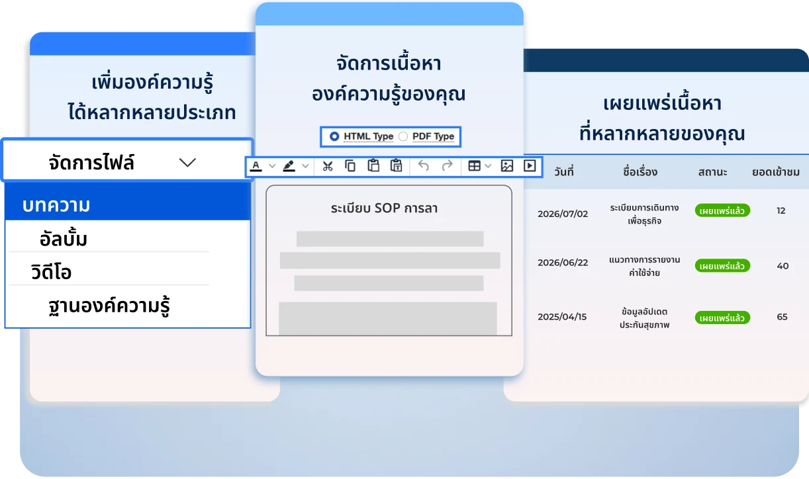
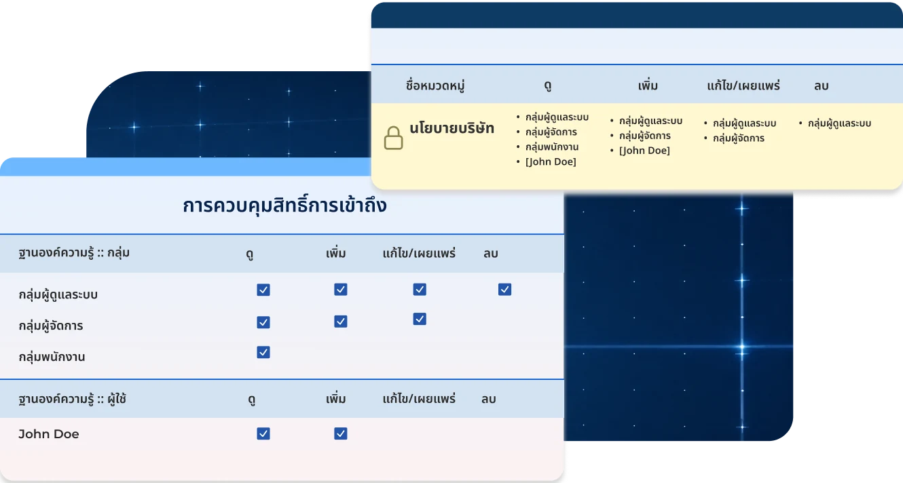
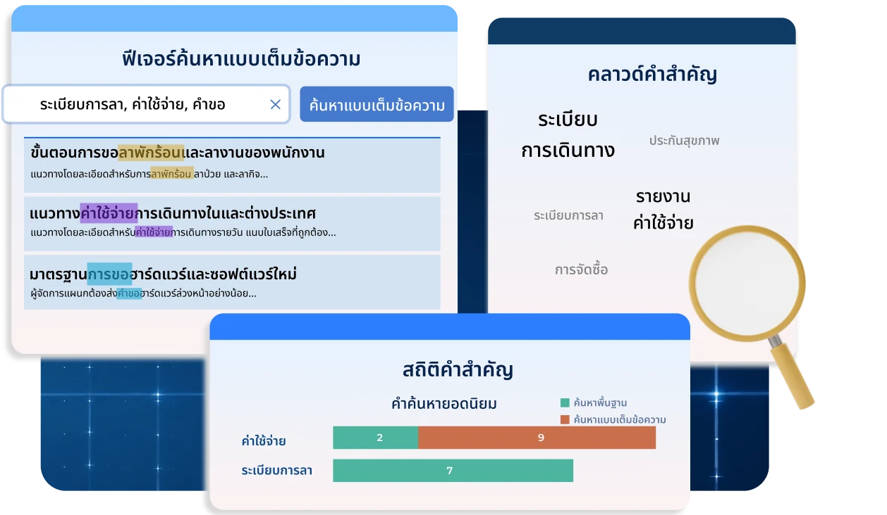
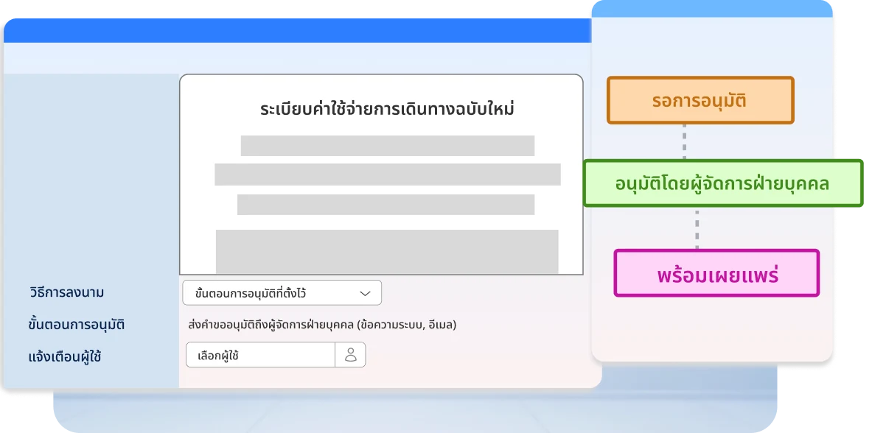
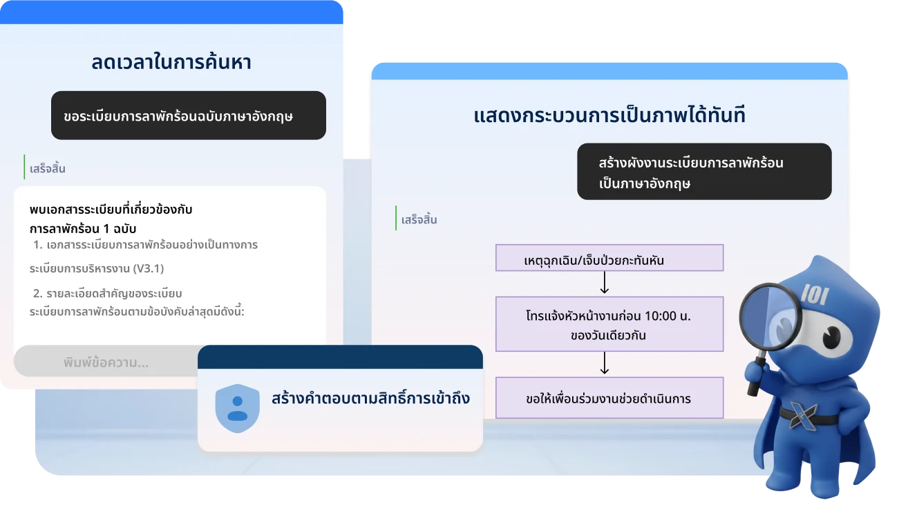
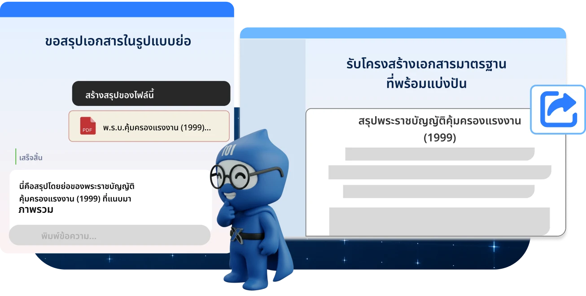
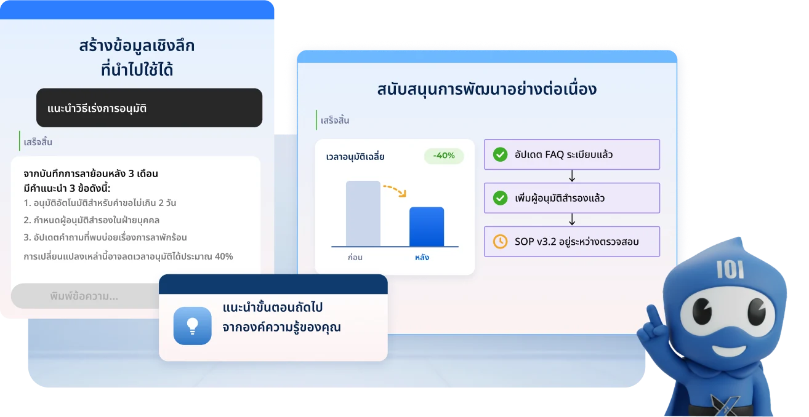

การสร้างองค์ความรู้หลากหลายรูปแบบ
- รองรับการเพิ่ม จัดการและเผยแพร่เนื้อหาความรู้หลากหลายประเภท: เช่น บทความ อัลบั้ม วิดีโอ ไฟล์ และเว็บไซต์ เพื่อตอบโจทย์ความต้องการที่หลากหลายในการนำเสนอองค์ความรู้
การจัดการองค์ความรู้ (Knowledge Management: KM) จัดทำ รวบรวม และบริหารจัดการองค์ความรู้ภายในองค์กร (Organizational Knowledge) เพื่อให้บุคลากรสามารถเข้าถึงข้อมูลที่ต้องการได้อย่างรวดเร็ว ส่งเสริมการทำงานและการเรียนรู้ร่วมกัน เพื่อเพิ่มประสิทธิภาพในการทำงานรวมถึงนวัตกรรมขององค์กร










Knowledge Management (KM) ช่วยให้องค์กรรวบรวม จัดระเบียบ แบ่งปัน และใช้ประโยชน์จากทรัพย์สินทางองค์ความรู้ เพื่อพัฒนาการทำงานร่วมกัน ผลิตภาพ และการตัดสินใจ
ซอฟต์แวร์ KM แบบเดิมมักเน้นการจัดเก็บข้อมูล แต่การค้นหาและนำความรู้ไปใช้งานยังทำได้ไม่เต็มประสิทธิภาพ xNinja ช่วยจัดการองค์ความรู้ให้เป็นมาตรฐาน พร้อมใช้ AI ในการค้นหา สรุป และแนะนำข้อมูล ทำให้เข้าถึงความรู้ได้รวดเร็วและมีประสิทธิภาพยิ่งขึ้น
xNinja.Knowledge Management รองรับการจัดการองค์ความรู้หลากหลายประเภท เช่น เอกสารกระบวนการทำงาน (Process Documents), คู่มือ (Manuals), แนวปฏิบัติ (Guidelines), คำถามที่พบบ่อย (FAQs) และเอกสารอื่น ๆ ภายในองค์กร ช่วยให้พนักงานค้นหาข้อมูลได้รวดเร็วและแบ่งปันความรู้ได้อย่างมีประสิทธิภาพ